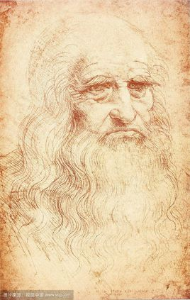

On the Origin of The Origin
Darwin's father was dead set on his son becoming a cleric but even though the young rapscallion began to study theology he found worms much more interesting.
When a lonely man with a moustache asked Darwin to ride with him on his boat named after a dog, Darwin agreed and set off around the world fiddling with wildlife.
Some say it was a load of birds from a bunch of islands hundreds of miles off the Ecuadorean coast that inspired his now widely accepted explanation of the mechanism of evolution. "Why does that bird on that island have a beak like that while that finch on that island has a beak like that? AHA! I've got it! Natural Selection!" he thought. It wasn't actually quite like that, but, y'know, it's a fine, popular romantic myth.
The Origin
Upon return from his jaunt, Charles chronicled his escapades (as The Voyage of the Beagle) and got a bit carried away with barnacles, although his theory of evolution was always ticking away in the back of his mind.
Some 20 or so year after he returned to England, a Welsh naturalist by the name of Wallace popped up with a similar idea to Darwin's grand theory. Darwin got a move on.
In 1858 a paper jointly attributed to Darwin and Wallace was presented to the Linnean Society of London that sent rumbles across the establishment and really ticked off a fair few people. The next year saw the publication of Darwin's 500-page "abstract" - On The Origin of Species by Means of Natural Selection or the Preservation of Favoured Races In The Struggle For Life (or OTOOSBMONSOTPOFRITSFL for short).
Darwin, already a prominent arc in scientific circles, was propelled into megastardom.
After The Origin
Chuck D revised The Origin five times, toning down each one a bit more than the one before it, partly to appease his religious wife. Who also happened to be his cousin. But some years later he'd had enough of trying to disguise the logical conclusion that humans are descended from the same common ancestor as all other animals and his third classic, The Descent of Man, was published and really pissed off the religious establishment.